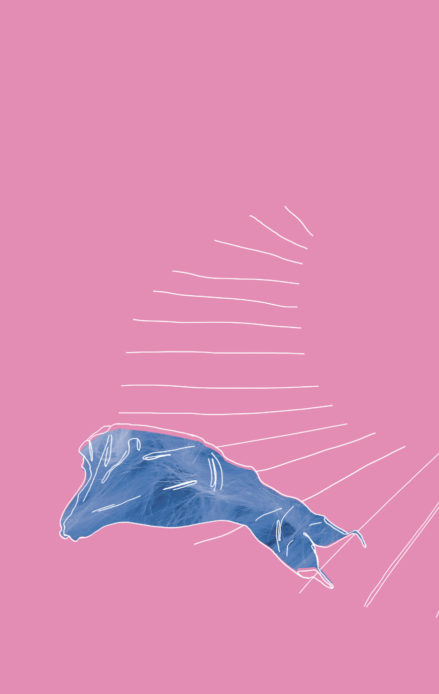

Мене звуть Настя Боднар
Я живу у Львові, продаю вінтаж, люблю їздити трамваєм та пишу прозу й поезію. Також веду блог в Інстаграмі. І я написала дебютну книжку.
«Годину по тому» — це п'ятнадцять новел про львівських жінок, таких ніжних та при цьому незалежних і відвертих у своїх бажаннях, про їх думки та сподівання.
Це розповіді про пошуки любові, про намагання знайти відповіді на запитання, чи існує кохання після сексу та навпаки. Про сміливість бути такими, якими є: наївними, закоханими, впевненими, обуреними, без зайвих прикрас і інакшомовностей.
Жінки, котрі самі вирішують, яким буде сьогоднішній день та знають, чого хочуть, в цій книзі говорять тобі про те, що зазвичай розказують лише подругам.